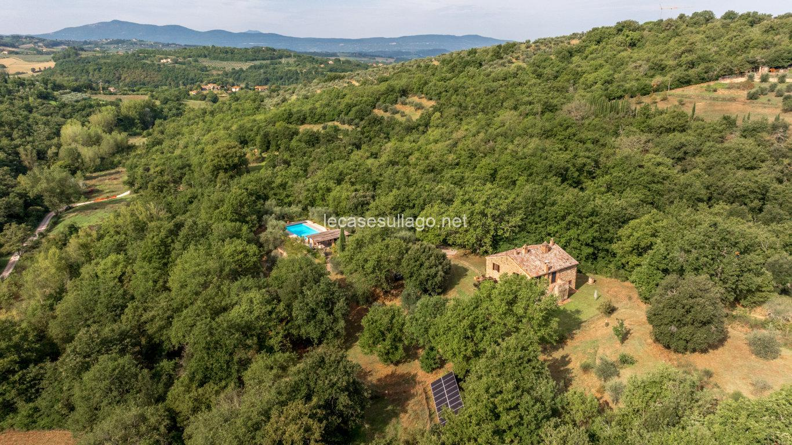

€790.000
Città della Pieve (Casaltondo / Monte Pausillo park) · Umbria · Italy
Fully restored stone-and-brick casale inside Monte Pausillo natural park near Città della Pieve, with handmade cotto, brick arches, original stone external staircase and a serious 13×6 saltwater pool — classic Umbrian character that punches above at €790k.
Opened 14 Sep 2026 on Le Case sul Lago; asking €790.000; ~260 m² on two levels; 4 bed / 3 bath; fenced terraced garden 2,800 m² (~40 olives) plus oak wood, arable and pasture (~41,114 m² total). Habitable now. Bread oven under external stair needs light restoration only.
Open listing